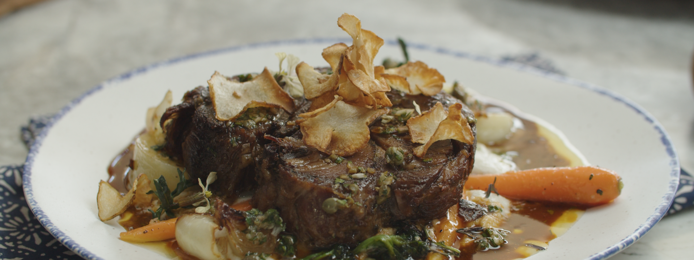

Sauce is an quinteseential aspect to make perfect crispy confit lamb.
Professional recipe only, unless you want to be yelled.
Ingredients
Confit Lamb Shoulder:
- 3 pounds boneless skinless lamb shoulder, trimmed of silverskin and butterflied
- 2 teaspoons kosher sea salt
- 1 teaspoon freshly cracked pepper
- 5-6 cups duck fat, melted*
- 1 head of garlic
- 2 tablespoons fresh picked thyme
- 3 tablespoons fresh picked rosemary
- 1 fresh bay leaf
- handful of peppercorns
- Flaky sea salt, for serving
Sunchoke Puree:
- 2 pounds Jerusalem Artichokes (sunchokes), peeled and diced into ½ inch cubes*
- ⅓ cup heavy cream
- 2-3 tablespoons unsalted butter
- Salt and Pepper, to taste
Sunchoke Chips:
- 2 small sunchokes, peeled
- Vegetable oil or reserved duck for frying
- Salt, to taste
Buttered Baby Spring Vegetables:
- 2 baby turnips, trimmed and quarters (about 6 ounces)
- 8 baby carrots, trimmed and sliced in half lengthwise (about 6 ounces)
- 2 baby fennel bulbs, trimmed, root intact, and sliced into ½-inch thick wedges
- 5 ounces sprouted baby broccoli, trimmed
- 6 ounces cippolini onions, peeled and sliced into ½-inch wedges
- 1-2 teaspoons granulated sugar
- 1 tablespoon olive oil
- 4 tablespoons unsalted butter
- handful chopped fresh herbs (tarragon, thyme, or chervil)
Caper Salsa Verde:
- 3 tablespoons capers, rinsed
- 2 tablespoon minced shallot
- 2 teaspoons anchovies in oil, minced
- 2-3 tablespoons red wine vinegar
- ½ cup parsley, minced
- ¼ cup olive oil
Lamb Thyme Jus:
- ½ pound lamb rib or neck bones
- 2 tablespoons olive oil
- ½ an onion, peeled and chopped
- 1 carrot, peeled and chopped
- 1 celery stalk, chopped
- 6 garlic cloves, unpeeled
- 1 teaspoon tomato paste
- 1 bay leaf
- 6 fresh thyme sprigs, divided
- 1 cup of dry white wine
- 2 cups veal or beef stock
- 2 cups chicken stock
COOKING INSTRUCTIONS
- Lamb Confit: Preheat oven to 275˚F. Unroll lamb and season generously with salt and pepper. Set aside.
Prepare herb seasoning - pull off 4 cloves of garlic from head, peel and finely chop with thyme, and
rosemary. Thin with olive oil and smear garlic-herb mixture onto lamb and roll tightly, trussing with twine.
- Melt duck fat in dutch oven with bay leaf, galic, rosemary sprig, and peppercorns. Gently place trussed lamb
into fat, cover with a piece of wet parchment paper to help keep lamb submerged in fat and bring to a gentle
simmer. Cover with lid and roast in the oven for 2½-3 hours or until the lamb is very tender. Remove from
oven and let lamb cool completely in fat*.
- Once cool, remove lamb from fat and slice into 1-inch thick slices. Some meat might fall away, which is fine
just save for crisping later. Scoop out garlic cloves from fat and set aside for salsa verde, strain duck
fat, refrigerate, & reserve for another use.
- Sunchoke Puree: Place sunchokes in a pot and cover with water, bring to a boil and season generously with
salt, cook until sunchokes are fork tender, about 15 minutes.
- Drain sunchokes and place in a blender along with heavy cream and butter. Season with salt and blend on high
until smooth, adding more cream if needed to blend. Reheat in a pot over medium-low heat, stirring often to
prevert puree from scorching.
- Sunchoke Chips: Heat a shallow saucepan over medium-low heat with about ½-inch of oil or fat and heat to
325˚F. Thinly slice sunchokes to 1/16 thick on a mandoline or with a sharp knife. (This can be done ahead of
time and sunchokes can be held in cool water to prevent browning, be sure to drain and pat very dry with
paper towels). Working in batches fry sunchokes until golden brown, drain on a paper towel lined-tray and
season with salt.
- Buttered Baby Vegetables and Cippolinis: Bring a small pot of water to a boil and season generously with
salt. Prepare an ice bath with ice and just enough water to thin. Working in batches blanch vegetables for
2-3 minutes, until just tender beginning with turnips, then carrots, then fennel. Shock in prepared ice bath
until cool, drain and dry on paper towels. Heat a large skillet over medium heat and drizzle with 1
tablespoon olive oil, add cippolinis and quickly sear until caramelized on all sides, about 3 minutes.
Sprinkle with salt, pepper, sugar, and 1 tablespoon of butter, swirl to melt butter and coat onions, cook
for 2-3 minutes until tender and caramelized. Remove and set aside, add remaining butter to pan along with
blanched vegetables and warm over medium-low heat returning cippolinis to pan and keep warm while reheating
lamb.
- Caper Salsa Verde: Scrape out half the roasted garlic from skins and mash with a fork until smooth. Mix
together with capers, shallot, chopped anchovy, and red wine vinegar until smooth. Stir in parsley, season
with pepper and whisk in olive oil until incorporated. Set aside.
- Lamb Thyme Jus: Preheat oven to 400˚F. Scatter lamb bones on a baking sheet or roasting pan, drizzle with 1
tablespoon olive oil and roast for about 1 hour until well browned (turning occasionally).
- Heat remaining olive oil in a dutch oven over high heat, add vegetables and cook until browned and slightly
tender. Stir in tomato paste, continuing to cook for another 2 minutes until paste darkens. Add half the
thyme and deglaze with wine, boil until reduced by half. Add roasted bones to pot and cover with veal and
chicken stock.
- Simmer stock for 3-4 hours until liquid has reduced by half, skimming excess oil periodically. Strain stock
and return to a pot. Add remaining thyme sprigs and simmer, reducing until resembling a thick, syrupy sauce
(reduced by about ⅔).
- Reheat Lamb Confit: Heat a large skillet* over medium-high heat, drizzle with a touch of olive oil and fry
lamb pieces until golden brown, carefully turn and fry the other side. The lamb will sputter a bit as the
fat starts to melt, alternatively you can use a grill or grill pan to caramelize. Season with flaky sea salt
and repeat with remaining pieces.
- To serve, spoon a heaping serving of puree onto a warm plate. Toss buttered vegetables with fresh herbs and
nestle into puree. Top with a slice (or two) of crispy lamb confit followed by a generous drizzle of salsa
verde and sunchoke chips.
Recipe Notes
- Duck fat can be hard to source, but is worth the hunt, but if you can’t source, you can substitute with an
extra-virgin olive oil for a robust alternative.
- Confit meat, much like any braised meat, always tastes better the next day as it marinates and absorbs all
the flavor of the cooking liquid. This particular style is best cooled overnight in the fat, removed and
then sliced when cool ensuring a beautiful slice of lamb that will hold up in the frying pan later.
- Lamb Confit, much like Duck confit can be reheated under a broiler for a quicker (and cleaner)
- Sunchokes can be substituted with root vegetables such as parsnips for an equally delicious flavor.
Return to Top
Return to the Collections